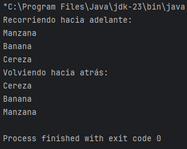
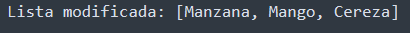
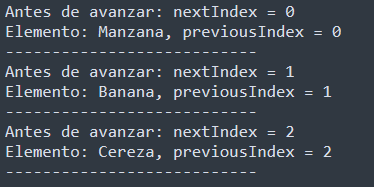
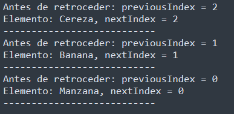

ListIterator es una versión mejorada de Iterator que permite recorrer una List en ambas direcciones (hacia adelante y hacia atrás), además de modificar la lista de forma segura durante la iteración con algunos métodos añadidos.
En este caso, los métodos next() y hasNext() se reemplazan por previous() y hasPrevious():
public class ListIteratorEjemplo {
public static void main(String[] args) {
List<String> frutas = new ArrayList<>(Arrays.asList("Manzana", "Banana", "Cereza"));
ListIterator<String> listIterator = frutas.listIterator();
System.out.println("Recorriendo hacia adelante:");
while (listIterator.hasNext()) {
System.out.println(listIterator.next());
}
System.out.println("Volviento hacia atrás:");
while (listIterator.hasPrevious()) {
System.out.println(listIterator.previous());
}
}
}

Si no hubiéramos iniciado el recorrido hacia adelante y solamente queremos recorrer la lista hacia atrás, deberemos iniciar el iterador en la última posición:
ListIterator<String> listIterator = frutas.listIterator(frutas.size()); // posiciona al finalPara modificar elementos tenemos disponible el método ListIterator.set():
public class ListIteratorEjemplo {
public static void main(String[] args) {
List<String> frutas = new ArrayList<>(Arrays.asList("Manzana", "Banana", "Cereza"));
ListIterator<String> listIterator = frutas.listIterator();
System.out.println("Recorriendo hacia adelante:");
while (listIterator.hasNext()) {
System.out.println(listIterator.next());
listIterator.set("Mango"); // modifica la lista de forma segura
}
System.out.println("Recorriendo hacia atrás:");
while (listIterator.hasPrevious()) {
System.out.println(listIterator.previous());
}
System.out.println("Lista modificada: " + frutas);
}
}
Añadir elementos con .add():
public class AgregarEliminarConListIterator {
public static void main(String[] args) {
List<String> frutas = new ArrayList<>(Arrays.asList("Manzana", "Banana", "Cereza"));
ListIterator<String> listIterator = frutas.listIterator();
while (listIterator.hasNext()) {
String fruta = listIterator.next();
if (fruta.equals("Banana")) {
listIterator.add("Sandía"); // inserta después de "Banana"
}
if (fruta.equals("Cereza")) {
listIterator.remove(); // elimina "Cereza" de forma segura
}
}
System.out.println("Lista final: " + frutas); // [Manzana, Banana, Sandía]
}
}
OJO: cuando utilizamos el método add(), el elemento se inserta en la posición actual del cursor, y el cursor se mueve después del elemento insertado.
Y además, ListIterator nos permite obtener los índices con nextIndex() (devuelve el índice del próximo elemento en la lista) y previousIndex() (devuelve el índice del elemento anterior en la lista).
- Ejemplo iterando hacia adelante (nextIndex()):
import java.util.*;
public class ListIteratorIndices {
public static void main(String[] args) {
List<String> frutas = new ArrayList<>(Arrays.asList("Manzana", "Banana", "Cereza"));
ListIterator<String> listIterator = frutas.listIterator();
while (listIterator.hasNext()) {
int actualIndex = listIterator.nextIndex();
System.out.println("Antes de avanzar: nextIndex = " + actualIndex);
String fruta = listIterator.next(); // avanza al siguiente elemento
System.out.println("Elemento: " + fruta + ", previousIndex = " + listIterator.previousIndex());
System.out.println("---------------------------");
}
}
}

- Ejemplo iterando hacia atrás (.previousIndex()):
public class ListIteratorReverso {
public static void main(String[] args) {
List<String> frutas = new ArrayList<>(Arrays.asList("Manzana", "Banana", "Cereza"));
ListIterator<String> listIterator = frutas.listIterator(frutas.size()); // posiciona al final
while (listIterator.hasPrevious()) {
int actualIndex = listIterator.previousIndex();
System.out.println("Antes de retroceder: previousIndex = " + actualIndex);
String fruta = listIterator.previous(); // retrocede un elemento
System.out.println("Elemento: " + fruta + ", nextIndex = " + listIterator.nextIndex());
System.out.println("---------------------------");
}
}
}

- Otro ejemplo:
public class EjemploListIterator {
public static void main(String[] args) {
List<String> frutas = new ArrayList<>(Arrays.asList("Manzana", "Banana", "Cereza"));
ListIterator<String> iter = frutas.listIterator();
System.out.println("Al inicio:");
System.out.println("nextIndex(): " + iter.nextIndex()); // 0 (porque el cursor está antes del primer elemento)
System.out.println("previousIndex(): " + iter.previousIndex()); // -1 (porque no hay elementos antes)
System.out.println("Avanzamos con next():");
System.out.println("Elemento: " + iter.next()); // Manzana
System.out.println("nextIndex(): " + iter.nextIndex()); // 1
System.out.println("previousIndex(): " + iter.previousIndex()); // 0
System.out.println("Avanzamos otra vez con next():");
System.out.println("Elemento: " + iter.next()); // Banana
System.out.println("nextIndex(): " + iter.nextIndex()); // 2
System.out.println("previousIndex(): " + iter.previousIndex()); // 1
System.out.println("Retrocedemos con previous():");
System.out.println("Elemento: " + iter.previous()); // Banana
System.out.println("nextIndex(): " + iter.nextIndex()); // 1
System.out.println("previousIndex(): " + iter.previousIndex()); // 0
}
}